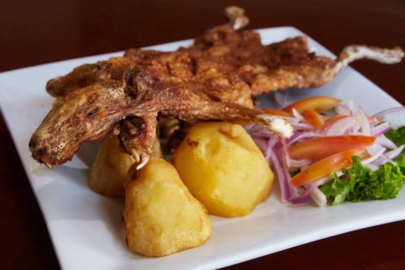

Cuy Chactado
Ingredientes
- 1 cuy limpio y eviscerado
- 2 cditas de ajo molido
- Sal, pimienta y comino al gusto
- Harina de maíz para rebozar
- Aceite abundante para freír
- ½ taza de caldo (del cuy o pollo)
- Para la guarnición: papas sancochadas en cubos, ají panca, cebolla y maní molido
¡A PREPARAR!
1. Condimentar y freír el cuy
- Sazona el cuy con ajo, sal, pimienta y comino. Deja reposar 2 h.
- Pásalo por harina de maíz y fríe en abundante aceite hasta dorar y quedar crujiente.
2. Preparar la guarnición deportiva (papa-mani)
- En una olla, calienta un poco de aceite y dora cebolla.
- Añade ají panca y cocina 2 min.
- Vierte el caldo y agrega papas sancochadas en cubos y maní molido.
- Sazona con sal, pimienta y comino, y cocina hasta espesar.
3. Servir
- Sirve el cuy chactado acompañado de la guarnición de papa con maní, choclo y sarsa criolla al gusto.